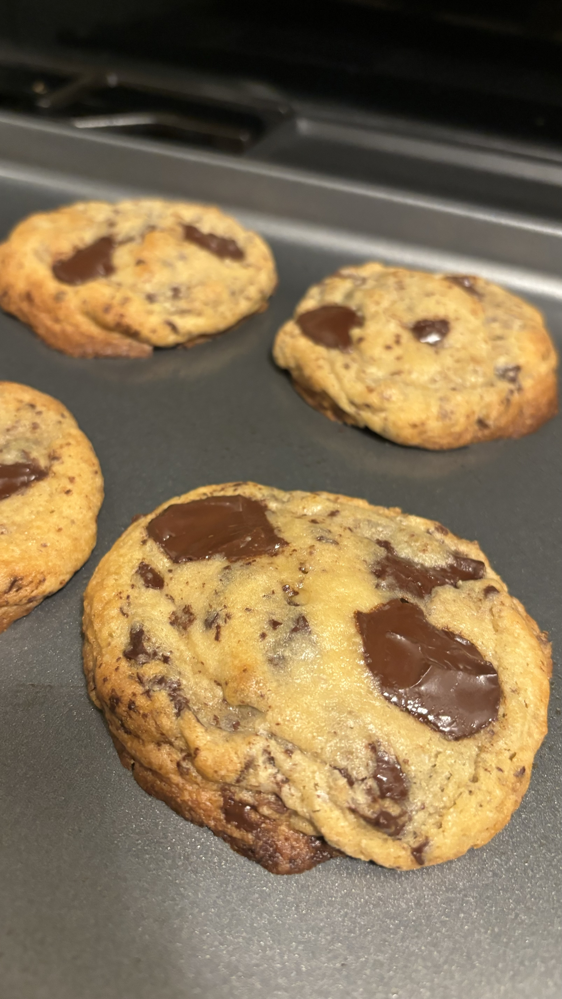
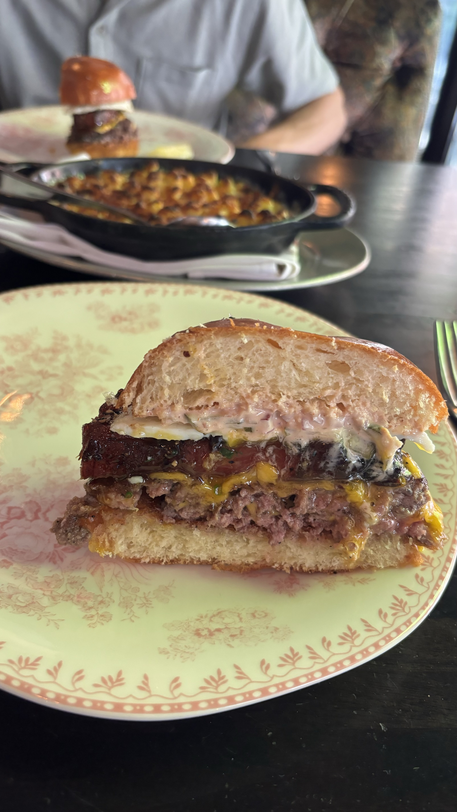

2024 Fun facts
-
On 9/15, I ran the Copenhagen half marathon and got a PR of 1:20:25. Check out the workout plan I used to get there!
-

After the half marathon, I spent my time exploring Copenhagens beautiful city and enjoying its pastry scene
-
My favorite artist is Chris Stapleton. I saw him live during the summer and plan on seeing him at the Austin City Limits Festival in october!
-

Over the past 4 years, I have vigoursely researched the science behind how a cookie is made. Sugar, flour, butter proportions all play a significant role in how each cookie is crafted. I've learned the differences between making a chewy, dense, thick, and flat cookies. I'm happy to share, I secretly have crafted the best recipe and am now taking orders! Email me for a batch!
-

If you know me, then you know 3 key things about me. 1. Cookies 2. Running. And 3, my enjoyment for exploring NYCs restaurant scene. With that, I somehow obtained a reservation at 4 Charles Prime Rib and had the best meal of my life. Pictured here is their burger with egg, thick cut bacon and three juicy patties.